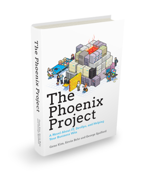

<< DevOps - 2013 in review >>
Created by Paul Czarkowski / @pczarkowski
We learned that DevOps is more than
giving root to developers.

http://xkcd.com/149/
alias devops=sudo # devops http://puppetlabs.com/blog/download-devops-and-other-wince-worthy-faux-pas
We fought a valiant battle with ruby
and we lost
$ sudo gem install nokigiri
Building native extensions. This could take a while...
ERROR: Error installing nokogiri:
ERROR: Failed to build gem native extension.
/Users/xzxx/.rvm/rubies/ruby-1.9.3-p429/bin/ruby extconf.rb
Extracting libxml2-2.8.0.tar.gz into tmp/x86_64-apple-darwin13.0.0/ports/libxml2/2.8.0... OK
Running 'configure' for libxml2 2.8.0... OK
Running 'compile' for libxml2 2.8.0... OK
Running 'install' for libxml2 2.8.0... OK
Activating libxml2 2.8.0 (from /Users/xxx/.rvm/gems/ruby-1.9.3-p429/gems/nokogiri-1.6.0/ports/x86_64-apple-darwin13.0.0/libxml2/2.8.0)...
Extracting libxslt-1.1.26.tar.gz into tmp/x86_64-apple-darwin13.0.0/ports/libxslt/1.1.26... OK
Running 'configure' for libxslt 1.1.26... OK
Running 'compile' for libxslt 1.1.26... OK
Running 'install' for libxslt 1.1.26... OK
Activating libxslt 1.1.26 (from /Users/xxx/.rvm/gems/ruby-1.9.3-p429/gems/nokogiri-1.6.0/ports/x86_64-apple-darwin13.0.0/libxslt/1.1.26)...
checking for libxml/parser.h... *** extconf.rb failed ***
Could not create Makefile due to some reason, probably lack of
necessary libraries and/or headers. Check the mkmf.log file for more
details. You may need configuration options.
So Opscode made Omnibus and we fought back
We learned that devops is more than just
But not for lack of trying
We were reminded that...
Devops is about inclusiveness
"I just wanted to point out that your dick joke, which I’m quite certain isn’t intended to be malicious in any way, doesn’t do anything whatsoever to help the gender diversity problem that we have in technology, and most especially in technical operations."
Mark Imbriaco - Devops Mailling list
http://www.cryptocracy.com/blog/2013/11/23/dick-jokes-and-devops
We were reminded that...
"There is no talent shortage"
http://www.slideshare.net/littleidea/there-is-no-talent-shortage-velocity-2013
Recruiters went full retard
- http://shit-recruiters-say.tumblr.com
- https://twitter.com/recruiterbro
- https://twitter.com/shitrecruiters
Recruiters went full retard
http://www.slideshare.net/petecheslock/3-pete-cheslock-recruiting-is-broken-how-do-we-fix-it
The Puppet Vs Chef war was won...

Just Kidding! There is no war.
We shaved a metric fuckton of yaks
We were reminded that you can't
buy a devops!
But you can certainly sell one!
- http://www.ibm.com/developerworks/devops/
- http://www.collab.net/HP/DevOps
- http://www.rackspace.com/devops/
We learned what DevOps really means
"Devops means giving a shit about your job enough to not pass the buck. Devops means giving a shit about your job enough to want to learn all the parts and not just your little world."- http://blog.lusis.org/blog/2013/06/04/devops-the-title-match/
We learned what DevOps really means
"Devops means working to continuously improve yourself and your sphere of influence"- Me ... just now.
We learned what DevOps really means
DevOps = Dev + Ops + Business
Nathan Harvey told us to
"Quit Your Job!"
https://speakerdeck.com/nathenharvey/quit-your-job
Those of us that took that advice prospered!
We learned how to save an ailing auto-parts retailer

and we swore to never again be a `Brent`
We learned that there's no such
person as a DevOp
"When you are the Head of DevOps, you 'own' DevOps. If DevOps fails, it is your failure, when it should be a failure of the entire company to change, adapt, and accept the cultural shift."
http://dyn.com/blog/devops-in-your-job-title-is-doing-you-harm/
We learned that there's no such
person as a DevOp
| SysAdmin | |
| SysAdmin Team | |
| Washed up SysAdmin | |
| Cash Cow |